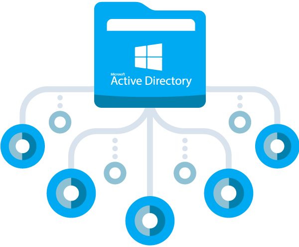

Systèmes & Réseaux

Linux (Debian)
Installation, configuration et gestion des serveurs sous Debian.

VMware / VirtualBox
Création et gestion de machines virtuelles pour tester des environnements.

Cisco / Packet Tracer
Configuration de réseaux, routage, VLANs et simulation avec Cisco PT.

Windows Server
Gestion des rôles, services AD, DHCP, DNS et stratégie de groupe.

Active Directory
Gestion des utilisateurs, OU, GPO et politiques de sécurité.

PowerShell
Requêtes cmdd, création de bases de données et manipulation de données.